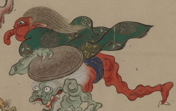

天狗のような化物。肌は赤く、緑色の衣を羽織り、青い褌を締めている。長髪を後方になびかせて、何者かから逃れるように足早に駆け出している。鼻先が折れ曲がっており、足の爪は鋭い。
出典：親書誌：U426_nichibunken_0154：妖怪絵巻；ヨウカイエマキ／日付：2010／資源識別子：U426_nichibunken_0154_0048_0000
Copyright (c)2010- International Research Center for Japanese Studies, Kyoto, Japan. All rights reserved.